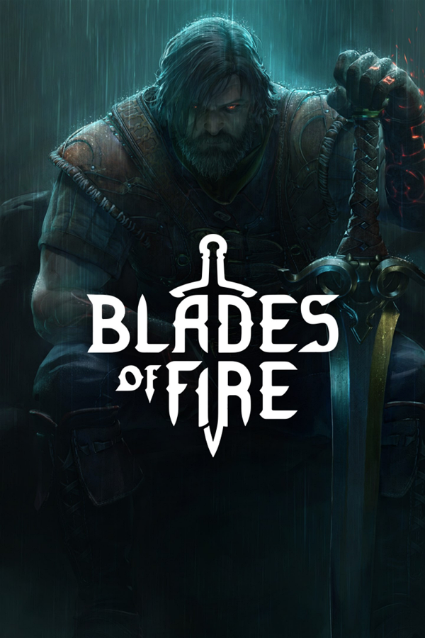

Blades of Fire
Every archived year-end list appearance, including placement and points earned.
About the Game
You are Aran of Lyra, firstborn of the King's Pupil. The newly crowned Queen Nerea has cast a spell that turns steel to stone. Only her army of abominations wields the divine metal against which all other swords shatter. The Forge Find forging scrolls, develop your forging skills, and craft your weapon to suit your fighting style. The weapon family you choose and the materials you use will affect characteristics such as weight, length, durability, penetration, and edge quality. Choose Your Weapon Choose from seven different weapon families and over 30 unique forging scrolls, allowing for nearly endless weapon combinations. Your weapon choice will be crucial when facing your enemy! Tactical Combat A unique and challenging combat system that allows you to target specific parts of your enemy's body. Slash, stab, or strike enemies depending on the situation and their equipment. Only the right weapon will allow you to break through the enemy's armor. You are not alone. Adso is Aran's companion who will accompany him on his journey. During combat, Adso offers helpful advice on how to defeat enemies by analyzing them and recording his observations in his chronicles. He will be crucial to your adventure, as he speaks the ancient language of the forgers. Stay on your guard. Over 50 types of enemies await, including the Queen's guards, creatures, undead, and more. Each enemy has its own unique attack style, weapon, and armor configuration. A world filled with mystery. Aran and Adso embark on an uncertain mission. The objective is clear, but the path is fraught with peril, mysteries, and epic settings such as enormous castles, labyrinthine palaces, and more. You will only know what our heroes know; your intuition and courage must fill in the rest.
| Released | 2025-05-22 |
|---|---|
| Developer | Mercury Steam Entertainment |
| Publisher | 505 Games, MercurySteam |
| Genres | Action, Adventure |
| Platforms | PC, Xbox Series S/X, PlayStation 5 |
Where to Buy
Game information provided by RAWG.
Points by Year
List History
| Year | Source | List | Placement | Points |
|---|---|---|---|---|
| 2025 | Eurogamer | The 50 best games of 2025, ranked | 34 | 1 |